floatは回り込みのCSS
アイスクリームを浮かべた飲み物にコーヒーフロートなどがありますが、この「float」には「浮かべる」という意味があります。CSSで「float」を指定する際には、サイドバーや画像などを浮かせて左や右へ寄せ、そのあとに続く要素を回り込ませるのに使用します。
一番よく見かけるのはテンプレートで２カラムにする場合です。ヘッダー部分のあとに続くコンテンツを右や左に回り込ませ、左サイドバーや右サイドバーのテンプレートにする際によく使用されています。そのほか、コンテンツ内で画像を回り込ませる際にも使用されることが多いです。
左サイドバー「２カラム」でのfloatの使用方法
こちらはテンプレート内のヘッダー（header:緑）やサイドバー（sidebar:水色）、コンテンツ（content:赤）、フッター（footer:黄）をイメージしたものです。
■floatなし
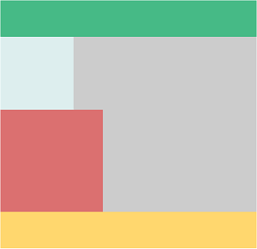
CSSでfloatを何も設定しない場合は回り込みは発生しないため、このように上から順に表示されていきます。
この状態でサイドバー（水色）の箇所に「float:left;」を指定すると、この箇所が浮かびあがって左に寄せられます。そして、支えを失ったコンテンツ（赤）の部分はサイドバーの下にもぐり込む形で左上へ詰めて表示されます。
■サイドバーに「float:left;」を指定
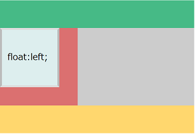
#sidebar {float:left;}
この状態では、サイドバー（水色）とコンテンツ（赤）の部分が重なって表示されていると考えればよいでしょう。
さらに、コンテンツ（赤）にも「float:left;」を指定すると、この部分も浮かびあがり、水色のサイドバーの横に表示されます。
■コンテンツに「float:left;」を指定
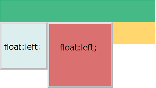
#sidebar {float:left;}
#content {float:left;}
この場合、コンテンツとサイドバーの両方が浮かびあがったため、フッター（黄）の箇所は支えを失って上へ移動します。
ちなみに、この赤のコンテンツの部分に「float:right;」を指定した場合は右に寄せられます。
■コンテンツに「float:right;」を指定
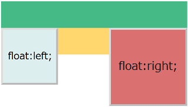
#sidebar {float:left;}
#content {float:right;}
さらに、フッターの箇所にも「float:left;」を指定するとフッターも浮かびあがり、水色と赤の次に回り込んで表示されます。
■フッターに「float:left;」を指定
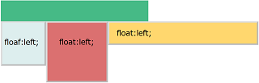
#sidebar {float:left;}
#content {float:left;}
#footer {float:left;}
ただ、この状態ではテンプレートとしては機能しないため、フッター（黄）の箇所に「clear:left;」を指定して回り込みを解除します。
clearでfloatの回り込みを解除する
CSSで「float:left;」などの回り込みを指定した場合、後ろに続く箇所で「clear:left;」を指定して回り込みを解除する必要があります。
例えば、フッター（黄）の箇所で「clear:left;」を指定して回り込みを解除するとこのようになります。
■フッターに「clear:left;」を指定
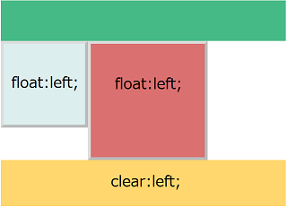
#sidebar {float:left;}
#content {float:left;}
#footer {clear:left;}
この場合はサイドバーもコンテンツも両方とも「float:left;」ですが、例えば、サイドバーに「float:left;」、コンテンツには「float:right;」を指定したとします。このようなleftとrightの両方のfloatを指定している状態で「clear:left;」を指定した場合、rightについては解除されないため以下のようになります。
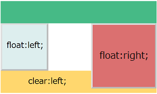
#sidebar {float:left;}
#content {float:right;}
#footer {clear:left;}
同じく、「clear:right;」を指定した場合は「float:right;」だけが解除されます。

#sidebar {float:left;}
#content {float:right;}
#footer {clear:right;}
そのため、一般的にはleftとrightのどちらのfloatも解除できる「clear:both;」を指定している人が多いです。ここでは「clear:left;」や「clear:right;」などと記述していますが、できるだけ「clear:both;」を使って解除することをおすすめします。
また、灰色の部分はサイドバーとコンテンツの親要素の領域になりますが、両方が浮かび上がってしまったため、親要素が子要素を認識しなくなってしまい、親要素内には何もない状態になってしまいます。
そのため、この親要素のheightに値を指定していない場合の高さはゼロとなり、灰色の箇所の高さがなくなってしまい、親要素の背景色などが表示されないケースがあります。
この場合、親要素に「overflow:auto;」を指定することで高さが認識され、この状態を回避することができます。
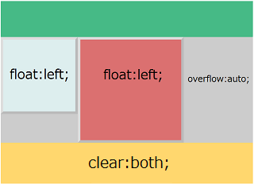
#main {overflow:auto;}
#sidebar {float:left;}
#content {float:left;}
#footer {clear:both;}
floatで回り込みをして親要素の背景色が反映されない場合は「overflow:auto;」を指定してみるとよいでしょう。
floatで画像に続く文章を回り込ませる方法
■<imgタグに「float」を指定
画像の<imgタグに「float:left;」や「float:right;」を指定することで、そのあとに続く文章を回り込ませることができます。
例えば、「float:left;」で画像を左に寄せたとします。
<img src="画像のURL" style="float:left;" />
すると、その後に続く文章が回り込んで次のように表示されます。
【HTMLソース】
<p><img src="画像のURL" style="float:left;" />文章あれこれ…</p>
【実際の表示】
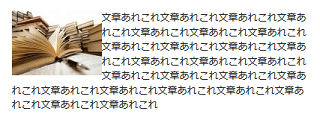
さらに、画像に余白を空けたい場合は「padding」も設定しておくとよいでしょう。
例えば、仮に「padding:0 15px 0 0;」などと指定したとします。すると、画像の右側に余白ができて間隔が空きます。
【HTMLソース】
<p><img src="画像のURL" style="float:left;padding:0 15px 0 0;" />文章あれこれ…</p>
【実際の表示】
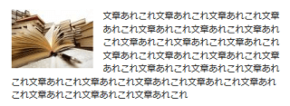
【CSSに記述する場合】
ちなみに、この<imgタグにclass属性などを指定してCSSに記述しても同じ意味になります。
<p><img src="画像のURL" class="sample" />文章あれこれ…</p>
.sample {float:left;padding:0 15px 0 0;}
できるだけ、CSSを使用することをおすすめします。
また、途中で段落が変わっても回り込みは解除されません。
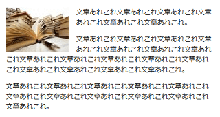
解除したい箇所の段落の<p>にて「clear:both;」を指定して解除するとよいでしょう。
【HTMLソース】
<p><img src="画像のURL" style="float:left;padding:0 15px 15px 0;" />文章あれこれ…</p><p style="clear:both;">文章あれこれ…</p>
【実際の表示】
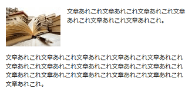
「clear:left;」でも解除されますが、当サイト運営者は「clear:both;」を使用しています。
■画像と文章がずれる場合
<imgタグを<p>タグの外に出した場合、画像と回り込む文章の高さがずれることがあります。
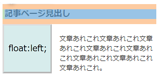
これは文章を囲んだ<p>タグのmarginなどが影響しているはずです。
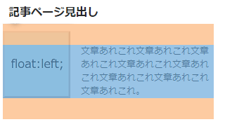
この場合、画像と<p>タグの外側に<div>などをかませて揃えておくとよいでしょう。
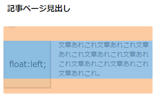
画像を<figureタグで囲む場合など、段差ができてしまう場合には外側に<div>をかませることをおすすめします。
<imgタグに「align」を指定する方法
（※追記：以下の「align属性」や「hspace属性」などはHTML5で廃止されました。上記の「float」を指定することをおすすめします。）
上記のように、画像にfloatを指定することで後に続く文章を回り込ませることができますが、imgタグに左寄せ、右寄せの「align」を指定することをおすすめします。
<img src="" alt="" width="" height="" hspace="15" align="left" border="0" />
imgタグにalignの右寄せ、左寄せを指定するだけで、あとに続く文章がこのように自動的に回り込んで表示されます。
この回り込みも解除する必要がありますが、改行タグに「clear="all"」を指定して解除するとよいでしょう。
<br clear="all" />
また、この場合、画像の「左右の余白」をhspace="15"で指定していますが、「上下左右」の間隔を個別に指定したい場合にはstyle属性などを使い、以下のように指定するとよいでしょう。
<img src="" style="padding: 0 15px 0 0;" align="left" />
このように右の余白のみを15pxで指定した場合、左の余白はなくなって以下のように表示されます。
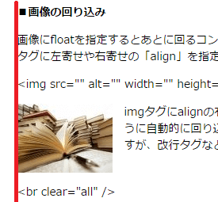
このstyle属性の箇所については、classなどを指定してスタイルシートの方で指定することもできます。
<img src="" class="sample" align="left" />
.sample {padding: 0 15px 0 0;}